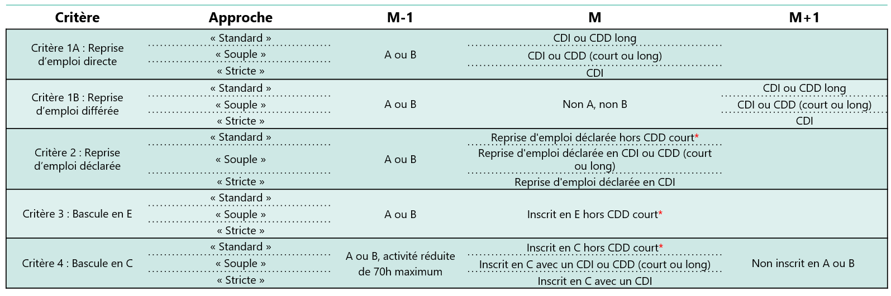
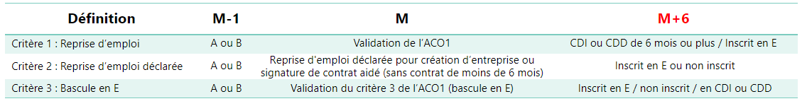

### Préparation de la table E0 pour le mois m
activite_reduite_m <- E0 %>%
mutate(NBHEUR_m0 = as.numeric(NBHEUR)) %>%
filter(MOIS == mois_m) %>%
arrange(id_midas, MOIS, desc(NBHEUR_m0)) %>%
group_by(id_midas) %>%
filter(row_number() == 1) %>%
ungroup()
### DEFM M ###
defm_m = DE %>%
select(id_midas, DATINS, DATANN, CATREGR) %>%
filter(DATINS <= fin_mois_m & (is.na(DATANN) | DATANN > fin_mois_m))%>%
mutate(mois = mois_m) %>%
arrange(id_midas, mois, desc(DATINS)) %>%
group_by(id_midas) %>%
filter(row_number() == 1) %>%
ungroup() %>%
left_join(activite_reduite_m, by = c("id_midas" = "id_midas", "mois" = "MOIS")) %>%
mutate(catnouv = case_when(CATREGR %in% c("1","2","3") & (is.na(NBHEUR_m0) == TRUE | NBHEUR_m0 == 0) ~ "A",
CATREGR %in% c("1","2","3") & (NBHEUR_m0 > 0 & NBHEUR_m0 <= 78) ~ "B",
CATREGR %in% c("1","2","3") & (NBHEUR_m0 > 78) ~ "C",
CATREGR == "4" ~ "D",
CATREGR == "5" ~ "E",
TRUE ~ "NP")) %>%
select(id_midas, catnouv, NBHEUR_m0)
### Préparation de la table E0 pour le mois M+1
activite_reduite_m1 <- E0 %>%
mutate(NBHEUR_m1 = as.numeric(NBHEUR)) %>%
filter(MOIS == mois_m1) %>%
arrange(id_midas, MOIS, desc(NBHEUR_m1)) %>%
group_by(id_midas) %>%
filter(row_number() == 1) %>%
ungroup()
### DEFM M+1 ###
defm_m1 = DE %>%
select(id_midas, DATINS, DATANN, CATREGR) %>%
filter(DATINS <= fin_mois_m1 & (is.na(DATANN) | DATANN > fin_mois_m1))%>%
mutate(mois = mois_m1) %>%
arrange(id_midas, mois_m1, desc(DATINS)) %>%
group_by(id_midas) %>%
filter(row_number() == 1) %>%
ungroup() %>%
left_join(activite_reduite_m1, by = c("id_midas" = "id_midas", "mois_m1" = "MOIS")) %>%
mutate(catnouv_m1 = case_when(CATREGR %in% c("1","2","3") & (is.na(NBHEUR_m1) == TRUE | NBHEUR_m1 == 0) ~ "A",
CATREGR %in% c("1","2","3") & (NBHEUR_m1 > 0 & NBHEUR_m1 <= 78) ~ "B",
CATREGR %in% c("1","2","3") & (NBHEUR_m1 > 78) ~ "C",
CATREGR == "4" ~ "D",
CATREGR == "5" ~ "E",
TRUE ~ "NP")) %>%
select(id_midas, catnouv_m1)
### Préparation de la table E0 pour le mois M+2
activite_reduite_m2 <- E0 %>%
mutate(NBHEUR_m2 = as.numeric(NBHEUR)) %>%
filter(MOIS == mois_m2) %>%
arrange(id_midas, MOIS, desc(NBHEUR_m2)) %>%
group_by(id_midas) %>%
filter(row_number() == 1) %>%
ungroup()
### DEFM M+2 ###
defm_m2 = DE %>%
select(id_midas, DATINS, DATANN, CATREGR) %>%
filter(DATINS <= fin_mois_m2 & (is.na(DATANN) | DATANN > fin_mois_m2))%>%
mutate(mois = mois_m2) %>%
arrange(id_midas, mois_m2, desc(DATINS)) %>%
group_by(id_midas) %>%
filter(row_number() == 1) %>%
ungroup() %>%
left_join(activite_reduite_m2, by = c("id_midas" = "id_midas", "mois_m2" = "MOIS")) %>%
mutate(catnouv_m2 = case_when(CATREGR %in% c("1","2","3") & (is.na(NBHEUR_m2) == TRUE | NBHEUR_m2 == 0) ~ "A",
CATREGR %in% c("1","2","3") & (NBHEUR_m2 > 0 & NBHEUR_m2 <= 78) ~ "B",
CATREGR %in% c("1","2","3") & (NBHEUR_m2 > 78) ~ "C",
CATREGR == "4" ~ "D",
CATREGR == "5" ~ "E",
TRUE ~ "NP")) %>%
select(id_midas, catnouv_m2)
### Préparation de la table E0 pour le mois M+6
activite_reduite_m6 <- E0 %>%
mutate(NBHEUR_m6 = as.numeric(NBHEUR)) %>%
filter(MOIS == mois_m6) %>%
arrange(id_midas, MOIS, desc(NBHEUR_m6)) %>%
group_by(id_midas) %>%
filter(row_number() == 1) %>%
ungroup()
### DEFM M+6 ###
defm_m6 = DE %>%
select(id_midas, DATINS, DATANN, CATREGR) %>%
filter(DATINS <= fin_mois_m6 & (is.na(DATANN) | DATANN > fin_mois_m6))%>%
mutate(mois = mois_m6) %>%
arrange(id_midas, mois_m6, desc(DATINS)) %>%
group_by(id_midas) %>%
filter(row_number() == 1) %>%
ungroup() %>%
left_join(activite_reduite_m6, by = c("id_midas" = "id_midas", "mois_m6" = "MOIS")) %>%
mutate(catnouv_m6 = case_when(CATREGR %in% c("1","2","3") & (is.na(NBHEUR_m6) == TRUE | NBHEUR_m6 == 0) ~ "A",
CATREGR %in% c("1","2","3") & (NBHEUR_m6 > 0 & NBHEUR_m6 <= 78) ~ "B",
CATREGR %in% c("1","2","3") & (NBHEUR_m6 > 78) ~ "C",
CATREGR == "4" ~ "D",
CATREGR == "5" ~ "E",
TRUE ~ "NP")) %>%
select(id_midas, catnouv_m6)
##### DES M+1 #####
des_m1 = DE %>%
select(id_midas, DATINS, DATANN, CATREGR, MOTINS, MOTANN) %>%
filter(is.na(DATANN) == FALSE & DATANN >= debut_mois_m1 & DATANN <= fin_mois_m1)%>%
mutate(mois_des = mois_m1) %>%
arrange(id_midas, mois_des, desc(DATANN)) %>%
group_by(id_midas) %>%
filter(row_number() == 1) %>%
ungroup() %>%
mutate(des_m1 = 1,
MOTANN_m1 = MOTANN) %>%
select(id_midas, des_m1, MOTANN_m1)Retour à l’emploi
Introduction
Cette fiche vise à présenter des indicateurs statistiques usuels dans l’étude de la situation vis-à-vis de l’emploi des demandeurs d’emploi et des bénéficiaires de minima sociaux. Des programmes pour les calculer à partir des données MiDAS sont mis à disposition.
Retour à l’emploi au sens de France Travail
Dans cette section, une méthode est proposée pour mesurer le taux d’accès à l’emploi des demandeurs d’emploi au sens de France Travail à partir des données MiDAS.
CautionDifférence de sources
Cet indicateur publié par France Travail est calculé à partir de l’appariement entre les données de l’inscription de France Travail (Fichier Historique Statistique, FHS) et les Déclarations Préalables à l’Embauche (DPAE). Le champ des DPAE diffère de celui des MMO de MiDAS : MiDAS, en appliquant les critères de l’indicateur d’accès à l’emploi de France Travail, capte davantage de retours à l’emploi, d’où l’écart constaté avec les séries publiées par France Travail. Les différences principales de champ sont :
la présence dans MiDAS de contrats de la fonction publique territoriale depuis 2021
la disponibilité dans MiDAS de la durée des contrats d’intérim, contrairement aux DPAE, qui joue sur le nombre de retours à l’emploi car la durée du contrat est un critère de reprise d’emploi pour France Travail
L’indicateur d’accès à l’emploi au mois M publié trimestriellement par France Travail (publication du 4ème trimestre 2023) est calculé sur le champ des demandeurs d’emploi inscrits en catégorie A ou B au mois M-1. Le champ inclut donc des personnes qui peuvent déjà être en emploi initialement : les demandeurs d’emploi en catégorie B, qui exercent une activité réduite qui n’excède pas 78 heures dans le mois.
NoteLes catégories statistiques d’inscription
| Catégorie d’inscription du demandeur d’emploi | Obligation d’actes positifs de recherche d’emploi | Description |
|---|---|---|
| Catégorie A | Oui | Sans emploi au cours du mois |
| Catégorie B | Oui | Exercice d’une activité réduite de mois de 78 heures dans le mois |
| Catégorie C | Oui | Exercice d’une activité réduite de plus de 78 heures dans le mois |
| Catégorie D | Non | Sans emploi : en maladie, en formation, en stage ou en Contrat de Sécurisation Professionnelle (CSP) par exemple |
| Catégorie E | Non | En emploi : bénéficiaires de contrats aidés, créateurs d’entreprise |
Critères de retour à l’emploi de l’indicateur France Travail

Repérage des demandeurs d’emploi par catégorie
Le repérage des demandeurs d’emploi par catégorie est possible dans MiDAS à partir de deux tables du Fichier Historique Statistique (FHS) :
la table DE qui contient les périodes d’inscription des demandeurs d’emploi ;
la table E0 qui contient le nombre d’heures mensuel d’activité réduite effectuées et permet de distinguer les catégories A, B ou C.
Caution
Dans la table DE, la variable CATREGR permet de distinguer les catégories A, B et C (modalités 1, 2, 3) de la catégorie D (modalité 4) et de la catégorie E (modalité 5). Cependant, les modalités 1, 2 et 3 ne correspondent pas respectivement aux catégories A, B et C, elles distinguent le type de contrat recherché (CDI, CDD, temps complet, partiel). Il faut nécessairement utiliser la table E0 pour distinguer ces trois catégories.
Il n’y a pas de nouvelle demande d’inscription pour les passages entre les catégories A, B et C. Lorsqu’un demandeur d’emploi passe d’une catégorie A, B ou C à la catégorie D ou E, une nouvelle ligne est automatiquement créée dans la table DE, même si le demandeur d’emploi reste inscrit en continu.
Pour calculer l’indicateur de retour à l’emploi pour des demandeurs d’emploi inscrits un mois donné, il faut donc connaître leur situation vis-à-vis de l’inscription et de l’emploi les deux mois qui suivent le mois en question.
La situation vis-à-vis de l’emploi salarié est disponible dans les MMO de MiDAS.
Voici une méthode pour repérer les demandeurs d’emploi inscrits sur les mois nécessaires pour le calcul de l’indicateur :
Repérage des contrats
Voici une méthode pour repérer la situation vis-à-vis de l’emploi salarié nécessaire au calcul de l’indicateur d’accès à l’emploi France Travail :
# Création d'une table MMO totale
##### Contrat débutant en M+1 #####
contrat_deb_m1 = MMO %>%
select(id_midas, L_Contrat_SQN, DebutCTT, FinCTT, Nature) %>%
filter(is.na(L_Contrat_SQN) == FALSE | id_midas != "" | is.na(id_midas) == FALSE) %>%
filter(DebutCTT >= debut_mois_m1 & DebutCTT <= fin_mois_m1) %>%
mutate(type_contrat_m1 = if_else(Nature %in% c("01","07","08","09","50","70","82","91"),"CDI","CDD")) %>%
mutate(duree_contrat_m1 = case_when(is.na(FinCTT) == TRUE | FinCTT == "" ~ datediff(as.Date("2050-01-01"),as.Date(DebutCTT))+1,
is.na(FinCTT) == FALSE ~ datediff(as.Date(FinCTT),as.Date(DebutCTT))+1)) %>%
arrange(id_midas, desc(type_contrat_m1), desc(duree_contrat_m1)) %>%
group_by(id_midas) %>%
filter(row_number() == 1) %>%
ungroup() %>%
mutate(contrat_deb_m1 = case_when(type_contrat_m1 == "CDD" & (duree_contrat_m1 >= 30 | is.na(duree_contrat_m1) == TRUE) ~ "CDD_long",
type_contrat_m1 == "CDD" & (duree_contrat_m1 < 30) ~ "CDD_court",
type_contrat_m1 == "CDI" ~ "CDI",
TRUE ~ "0")) %>%
select(id_midas, contrat_deb_m1, type_contrat_m1, duree_contrat_m1)
##### Contrat débutant en M+2 #####
contrat_deb_m2 = MMO %>%
select(id_midas, L_Contrat_SQN, DebutCTT, FinCTT, Nature) %>%
filter(is.na(L_Contrat_SQN) == FALSE | id_midas != "" | is.na(id_midas) == FALSE) %>%
filter(DebutCTT >= debut_mois_m2 & DebutCTT <= fin_mois_m2) %>%
mutate(type_contrat_m2 = if_else(Nature %in% c("01","07","08","09","50","70","82","91"),"CDI","CDD")) %>%
mutate(duree_contrat_m2 = case_when(is.na(FinCTT) == TRUE | FinCTT == "" ~ datediff(as.Date("2050-01-01"),as.Date(DebutCTT))+1,
is.na(FinCTT) == FALSE ~ datediff(as.Date(FinCTT),as.Date(DebutCTT))+1)) %>%
arrange(id_midas, desc(type_contrat_m2), desc(duree_contrat_m2)) %>%
group_by(id_midas) %>%
filter(row_number() == 1) %>%
ungroup() %>%
mutate(contrat_deb_m2 = case_when(type_contrat_m2 == "CDD" & (duree_contrat_m2 >= 30 | is.na(duree_contrat_m2) == TRUE) ~ "CDD_long",
type_contrat_m2 == "CDD" & (duree_contrat_m2 < 30) ~ "CDD_court",
type_contrat_m2 == "CDI" ~ "CDI",
TRUE ~ "0"))%>%
select(id_midas, contrat_deb_m2, type_contrat_m2, duree_contrat_m2)
##### Contrat en cours en M+1 #####
contrat_encours_m1 = MMO %>%
select(id_midas, L_Contrat_SQN, DebutCTT, FinCTT, Nature) %>%
filter(is.na(L_Contrat_SQN) == FALSE | L_Contrat_SQN != "") %>%
filter(id_midas != "" | is.na(id_midas) == FALSE) %>%
filter(DebutCTT <= fin_mois_m1 & (FinCTT > fin_mois_m1 | is.na(FinCTT) == TRUE | FinCTT == "")) %>%
mutate(type_contrat_encours_m1 = if_else(Nature %in% c("01","07","08","09","50","70","82","91"),"CDI","CDD")) %>%
mutate(duree_contrat_encours_m1 = case_when(is.na(FinCTT) == TRUE | FinCTT == "" ~ datediff(as.Date("2050-01-01"),as.Date(DebutCTT))+1,
is.na(FinCTT) == FALSE ~ datediff(as.Date(FinCTT),as.Date(DebutCTT))+1)) %>%
arrange(id_midas, desc(type_contrat_encours_m1), desc(duree_contrat_encours_m1)) %>%
group_by(id_midas) %>%
filter(row_number() == 1) %>%
ungroup() %>%
mutate(contrat_encours_m1 = case_when(type_contrat_encours_m1 == "CDD" & (duree_contrat_encours_m1 >= 30 | is.na(duree_contrat_encours_m1) == TRUE) ~ "CDD_long",
type_contrat_encours_m1 == "CDD" & (duree_contrat_encours_m1 < 30) ~ "CDD_court",
type_contrat_encours_m1 == "CDI" ~ "CDI",
TRUE ~ "0"))%>%
select(id_midas, contrat_encours_m1, type_contrat_encours_m1, duree_contrat_encours_m1)
##### Contrat en cours en M+2 #####
contrat_encours_m2 = MMO %>%
select(id_midas, L_Contrat_SQN, DebutCTT, FinCTT, Nature) %>%
filter(is.na(L_Contrat_SQN) == FALSE | L_Contrat_SQN != "") %>%
filter(id_midas != "" | is.na(id_midas) == FALSE) %>%
filter(DebutCTT <= fin_mois_m2 & (FinCTT > fin_mois_m2 | is.na(FinCTT) == TRUE | FinCTT == "")) %>%
mutate(type_contrat_encours_m2 = if_else(Nature %in% c("01","07","08","09","50","70","82","91"),"CDI","CDD")) %>%
mutate(duree_contrat_encours_m2 = case_when(is.na(FinCTT) == TRUE | FinCTT == "" ~ datediff(as.Date("2050-01-01"),as.Date(DebutCTT))+1,
is.na(FinCTT) == FALSE ~ datediff(as.Date(FinCTT),as.Date(DebutCTT))+1)) %>%
arrange(id_midas, desc(type_contrat_encours_m2), desc(duree_contrat_encours_m2)) %>%
group_by(id_midas) %>%
filter(row_number() == 1) %>%
ungroup() %>%
mutate(contrat_encours_m2 = case_when(type_contrat_encours_m2 == "CDD" & (duree_contrat_encours_m2 >= 30 | is.na(duree_contrat_encours_m2) == TRUE) ~ "CDD_long",
type_contrat_encours_m2 == "CDD" & (duree_contrat_encours_m2 < 30) ~ "CDD_court",
type_contrat_encours_m2 == "CDI" ~ "CDI",
TRUE ~ "0")) %>%
select(id_midas, contrat_encours_m2, type_contrat_encours_m2, duree_contrat_encours_m2)
##### Contrat en cours en M+6 #####
contrat_encours_m6 = MMO %>%
select(id_midas, L_Contrat_SQN, DebutCTT, FinCTT, Nature) %>%
filter(is.na(L_Contrat_SQN) == FALSE | L_Contrat_SQN != "") %>%
filter(id_midas != "" | is.na(id_midas) == FALSE) %>%
filter(DebutCTT <= fin_mois_m6 & (FinCTT > fin_mois_m6 | is.na(FinCTT) == TRUE | FinCTT == "")) %>%
mutate(type_contrat_encours_m6 = if_else(Nature %in% c("01","07","08","09","50","70","82","91"),"CDI","CDD")) %>%
mutate(duree_contrat_encours_m6 = case_when(is.na(FinCTT) == TRUE | FinCTT == "" ~ datediff(as.Date("2050-01-01"),as.Date(DebutCTT))+1,
is.na(FinCTT) == FALSE ~ datediff(as.Date(FinCTT),as.Date(DebutCTT))+1)) %>%
arrange(id_midas, desc(type_contrat_encours_m6), desc(duree_contrat_encours_m6)) %>%
group_by(id_midas) %>%
filter(row_number() == 1) %>%
ungroup() %>%
mutate(contrat_encours_m6 = case_when(type_contrat_encours_m6 == "CDD" & (duree_contrat_encours_m6 >= 30 | is.na(duree_contrat_encours_m6) == TRUE) ~ "CDD_long",
type_contrat_encours_m6 == "CDD" & (duree_contrat_encours_m6 < 30) ~ "CDD_court",
type_contrat_encours_m6 == "CDI" ~ "CDI",
TRUE ~ "0")) %>%
select(id_midas, contrat_encours_m6, type_contrat_encours_m6, duree_contrat_encours_m6)
##### Base finale #####
base_finale = defm_m %>%
filter(catnouv %in% c("A","B"))%>%
left_join(defm_m1, by = c("id_midas" = "id_midas")) %>%
left_join(defm_m2, by = c("id_midas" = "id_midas")) %>%
left_join(defm_m6, by = c("id_midas" = "id_midas")) %>%
left_join(des_m1, by = c("id_midas" = "id_midas")) %>%
left_join(contrat_deb_m1, by = c("id_midas" = "id_midas")) %>%
left_join(contrat_deb_m2, by = c("id_midas" = "id_midas")) %>%
left_join(contrat_encours_m1, by = c("id_midas" = "id_midas")) %>%
left_join(contrat_encours_m2, by = c("id_midas" = "id_midas")) %>%
left_join(contrat_encours_m6, by = c("id_midas" = "id_midas")) %>%
mutate(mois = mois_m1)Approche standard
critere = base_travail %>%
mutate(NBHEUR_m0 = as.numeric(NBHEUR_m0)) %>%
mutate(across(starts_with("catnouv"), ~ ifelse(is.na(.),"V",.)),
across(starts_with("contrat"), ~ ifelse(is.na(.),"Vide",.))) %>%
mutate(
c1a = if_else(catnouv %in% c("A","B") &
contrat_deb_m1 %in% c("CDD_long","CDI"),"1","0"),
c1b = if_else(catnouv %in% c("A","B") &
!catnouv_m1 %in% c("A","B") &
contrat_deb_m2 %in% c("CDD_long","CDI"),"1","0"),
c2 = if_else(catnouv %in% c("A","B") & des_m1 == "1" &
MOTANN_m1 %in% c("01","15","16") &
contrat_deb_m1 %in% c("CDI","CDD_long","Vide"),"1","0"),
c3 = if_else(catnouv %in% c("A","B") &
catnouv_m1 == "E" &
contrat_deb_m1 %in% c("CDI","CDD_long","Vide"),"1","0"),
c4 = if_else(catnouv %in% c("A","B") &
(NBHEUR_m0 <= 70 | is.na(NBHEUR_m0) == TRUE) &
(catnouv_m1 == "C" & contrat_deb_m1 %in% c("CDD_long","CDI","Vide") &
!catnouv_m2 %in% c("A","B")),"1","0")) %>%
mutate(standard = ifelse(c1a == "1","c1a",
ifelse(c1b == "1","c1b",
ifelse(c2 == "1","c2",
ifelse(c3 == "1","c3",
ifelse(c4 == "1","c4",NA)))))) Approche souple
critere = base_travail %>%
mutate(NBHEUR_m0 = as.numeric(NBHEUR_m0)) %>%
mutate(across(starts_with("catnouv"), ~ ifelse(is.na(.),"V",.)),
across(starts_with("contrat"), ~ ifelse(is.na(.),"Vide",.))) %>%
mutate(
c1a_souple = if_else(catnouv %in% c("A","B") &
contrat_deb_m1 %in% c("CDD_court","CDD_long","CDI"),"1","0"),
c1b_souple = if_else(catnouv %in% c("A","B") &
!catnouv_m1 %in% c("A","B") &
contrat_deb_m2 %in% c("CDD_court","CDD_long","CDI"),"1","0"),
c2_souple = if_else(catnouv %in% c("A","B") & des_m1 == "1" &
MOTANN_m1 %in% c("01","15","16") &
contrat_deb_m1 %in% c("CDI","CDD_court","CDD_long"),"1","0"),
c3_souple = if_else(catnouv %in% c("A","B") &
catnouv_m1 == "E" &
contrat_deb_m1 %in% c("CDD_court","CDD_long","CDI"),"1","0"),
c4_souple = if_else(catnouv %in% c("A","B") &
(NBHEUR_m0 <= 70 | is.na(NBHEUR_m0) == TRUE) &
(catnouv_m1 == "C" & contrat_deb_m1 %in% c("CDD_court","CDD_long","CDI") &
!catnouv_m2 %in% c("A","B")),"1","0"),
c4_nc = if_else(catnouv %in% c("A","B") &
(NBHEUR_m0 <= 70 | is.na(NBHEUR_m0) == TRUE) &
(catnouv_m1 == "C" &
!catnouv_m2 %in% c("A","B")),"1","0")) %>%
mutate(souple = ifelse(c1a_souple == "1","c1a_souple",
ifelse(c1b_souple == "1","c1b_souple",
ifelse(c2_souple == "1","c2_souple",
ifelse(c3_souple == "1","c3_souple",
ifelse(c4_souple == "1","c4_souple",NA))))))Approche stricte
critere = base_travail %>%
mutate(NBHEUR_m0 = as.numeric(NBHEUR_m0)) %>%
mutate(across(starts_with("catnouv"), ~ ifelse(is.na(.),"V",.)),
across(starts_with("contrat"), ~ ifelse(is.na(.),"Vide",.))) %>%
mutate(c1a_stricte = if_else(catnouv %in% c("A","B") &
contrat_deb_m1 %in% c("CDI"),"1","0"),
c1b_stricte = if_else(catnouv %in% c("A","B") &
!catnouv_m1 %in% c("A","B") &
contrat_deb_m2 %in% c("CDI"),"1","0"),
c2_stricte = if_else(catnouv %in% c("A","B") & des_m1 == "1" &
MOTANN_m1 %in% c("01","15","16") &
contrat_deb_m1 %in% c("CDI"),"1","0"),
c3_stricte = if_else(catnouv %in% c("A","B") &
catnouv_m1 == "E" &
contrat_deb_m1 %in% c("CDI"),"1","0"),
c4_stricte = if_else(catnouv %in% c("A","B") &
(NBHEUR_m0 <= 70 | is.na(NBHEUR_m0) == TRUE) &
(catnouv_m1 == "C" & contrat_deb_m1 %in% c("CDI") &
!catnouv_m2 %in% c("A","B")),"1","0")) %>%
mutate(stricte = ifelse(c1a_stricte == "1","c1a_stricte",
ifelse(c1b_stricte == "1","c1b_stricte",
ifelse(c2_stricte == "1","c2_stricte",
ifelse(c3_stricte == "1","c3_stricte",
ifelse(c4_stricte == "1","c4_stricte",NA))))))Retour à l’emploi durable
Dans cette section, le retour à l’emploi durable est défini ainsi :
demandeur d’emploi en fin de mois au mois m-1
validation du critère de retour à l’emploi standard au mois m
contrat durable (CDI ou CDD de plus de 6 mois) en cours au mois m+6 (ou inscription en E, ou absence d’inscription), qui n’est pas forcément le contrat retrouvé au mois m.

critere = base_travail %>%
mutate(NBHEUR_m0 = as.numeric(NBHEUR_m0)) %>%
mutate(across(starts_with("catnouv"), ~ ifelse(is.na(.),"V",.)),
across(starts_with("contrat"), ~ ifelse(is.na(.),"Vide",.))) %>%
mutate(
c1a = if_else(catnouv %in% c("A","B") &
contrat_deb_m1 %in% c("CDD_long","CDI"),"1","0"),
c1b = if_else(catnouv %in% c("A","B") &
!catnouv_m1 %in% c("A","B") &
contrat_deb_m2 %in% c("CDD_long","CDI"),"1","0"),
c2 = if_else(catnouv %in% c("A","B") & des_m1 == "1" &
MOTANN_m1 %in% c("01","15","16") &
contrat_deb_m1 %in% c("CDI","CDD_long","Vide"),"1","0"),
c3 = if_else(catnouv %in% c("A","B") &
catnouv_m1 == "E" &
contrat_deb_m1 %in% c("CDI","CDD_long","Vide"),"1","0"),
c4 = if_else(catnouv %in% c("A","B") &
(NBHEUR_m0 <= 70 | is.na(NBHEUR_m0) == TRUE) &
(catnouv_m1 == "C" & contrat_deb_m1 %in% c("CDD_long","CDI","Vide") &
!catnouv_m2 %in% c("A","B")),"1","0")) %>%
mutate(standard = ifelse(c1a == "1","c1a",
ifelse(c1b == "1","c1b",
ifelse(c2 == "1","c2",
ifelse(c3 == "1","c3",
ifelse(c4 == "1","c4",NA)))))) %>%
mutate(
RE = if_else(c1a == "1" | c1b == "1" | c2 == "1" | c3 == "1" | c4 == "1","1","0"),
red_c1a_6m = if_else(RE == "1" & duree_contrat_encours_m6 >= 180,"1","0"),
red_c2_6m = if_else(RE == "1" & MOTANN_m1 %in% c("15","16") & !catnouv_m6 %in% c("A","B","C","D"),"1","0"),
red_c3_6m = if_else(RE == "1" & c3 == "1" & !catnouv_m6 %in% c("A","B","C","D"),"1","0"),
red_6m = if_else(red_c1a_6m == "1" | red_c2_6m == "1" | red_c3_6m == "1","1","0"))Accès/passage par l’emploi salarié
Pour calculer un taux d’accès (ou passage) par l’emploi salarié simple à 6 mois (différent de l’indicateur France Travail) pour un stock de DEFM au mois m, voici une méthode :
### DEFM M ###
defm_m = DE %>%
select(id_midas, DATINS, DATANN, CATREGR) %>%
filter(DATINS <= fin_mois_m & (is.na(DATANN) | DATANN > fin_mois_m))%>%
mutate(mois = mois_m) %>%
arrange(id_midas, mois, desc(DATINS)) %>%
group_by(id_midas) %>%
filter(row_number() == 1) %>%
ungroup()
### Passage par l'emploi horizon 6 mois ###
passage_emploi <- MMO %>%
right_join(defm_m, by = c("id_midas")) %>%
mutate(passage_emploi_m6 = ifelse(DebutCTT >= fin_mois_m & DebutCTT <= fin_mois_m6, 1, 0))Présence en emploi salarié
Pour calculer un taux de présence en emploi salarié simple à horizon 6 mois (différent de l’indicateur France Travail) pour un stock de DEFM au mois m, voici une méthode :
### DEFM M ###
defm_m = DE %>%
select(id_midas, DATINS, DATANN, CATREGR) %>%
filter(DATINS <= fin_mois_m & (is.na(DATANN) | DATANN > fin_mois_m))%>%
mutate(mois = mois_m) %>%
arrange(id_midas, mois, desc(DATINS)) %>%
group_by(id_midas) %>%
filter(row_number() == 1) %>%
ungroup()
### Présence en emploi en M+6 ###
presence_emploi <- MMO %>%
right_join(defm_m, by = c("id_midas")) %>%
mutate(presence_emploi_m6 = ifelse(DebutCTT <= fin_mois_m6 & (FinCTT >= debut_mois_m6 | is.na(FinCTT)), 1, 0))